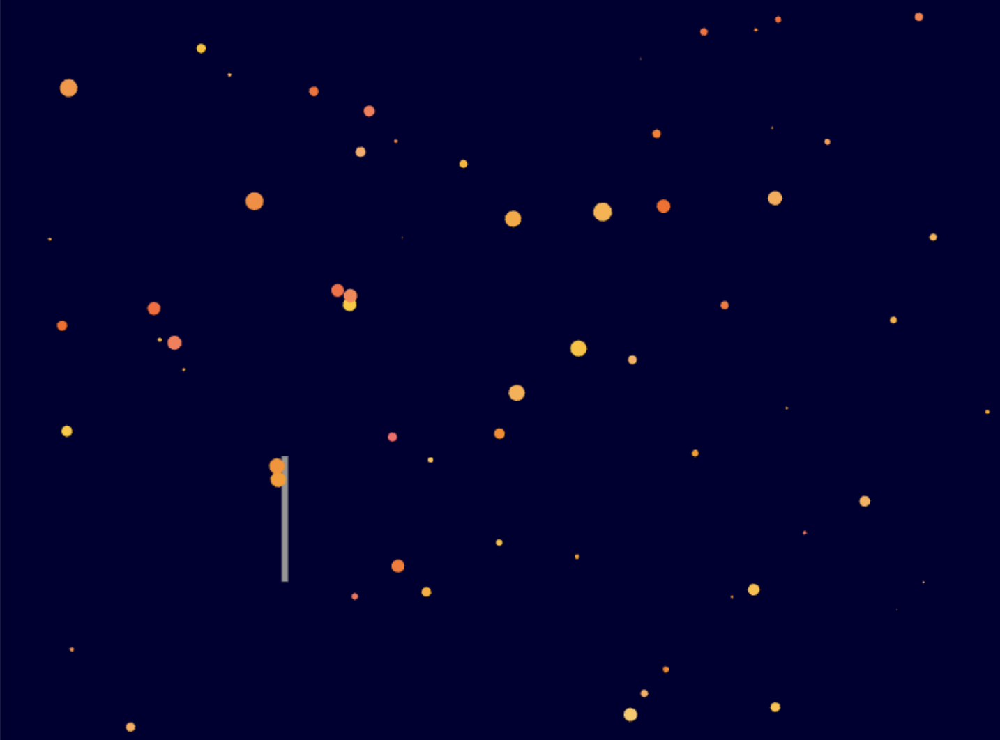

April 4, 2024
Inspired by Fairy Godmother's magical wand, the user can press on the screen to release magical sparks. Small particles will form around the wand and slowly spread out, eventually disappearing. I initially drew inspiration from the fire sparks from Howl's Moving Castle, however, as I added the mouse interaction and the colors, I decided to change the overall theme into a magical wand to create a more reasonable background.
Boolean wand: “if (mouseIsPressed && particles.length is less than blank) addNewParticle()” This allowed me to maintain the amount of particles on the canvas. In this, I can check if the mouse is pressed and if there are less than 100 particles to let me create new particle magical smarks.
 P5 Sketch →Arrays: In this project, I used a particle array to manage multiple instances of the particle class, which allows me to efficiently manage and manipulate the particles in my sketch. Removing particles: Initially, the particles were bouncing and all stayed on the canvas, however, to match the magical disappearance, I utilized the splice function to remove the particles that went outside of the canvas. Random: I utilized random in the shape, varying from (1, 15) and velocity of my particles in my canvas to make the particles disperse in different directions. I also utilized random in a specific set of color of oranges in order to add variation in the shade of orange sparks.
Refelection What is Object-Oriented Programming (OOP), a Class and an Instance of the Class? OOP is a programming model that revolves around the concept of objects. A class is a template for creating objects and defines the display and update of the objects we use. An instance is a specific part of a class that can carry its values. There can be multiple instances in a class.
Discuss the effectiveness of OOP. When is OOP useful? In what way can it be utilized? OOP allows my code to be more organized as it utilizes classes that can be reused in other projects. OOP also helps organize my code as it separates code into smaller functionality groups. As a result, OOP can be useful when creating large complex projects, and it can be utilized in a variety of things such as building reusable libraries that can be used for multiple projects or games that utilize a variety of interactions and functions.
Describe the objects you have created. What properties and methods were implemented? What kind of behaviors did you create by manipulating them? The main objects I created were the particle sparks from my wand. Rather than moving them up and down continuously without user interaction, I wanted the user to be able to control the project more. As a result, I utilized mouse interaction to let the user create the magical spark particles. I created a random dispersing behavior by utilizing a random variable in velocity and other attributes of my particle.
Demo Video →